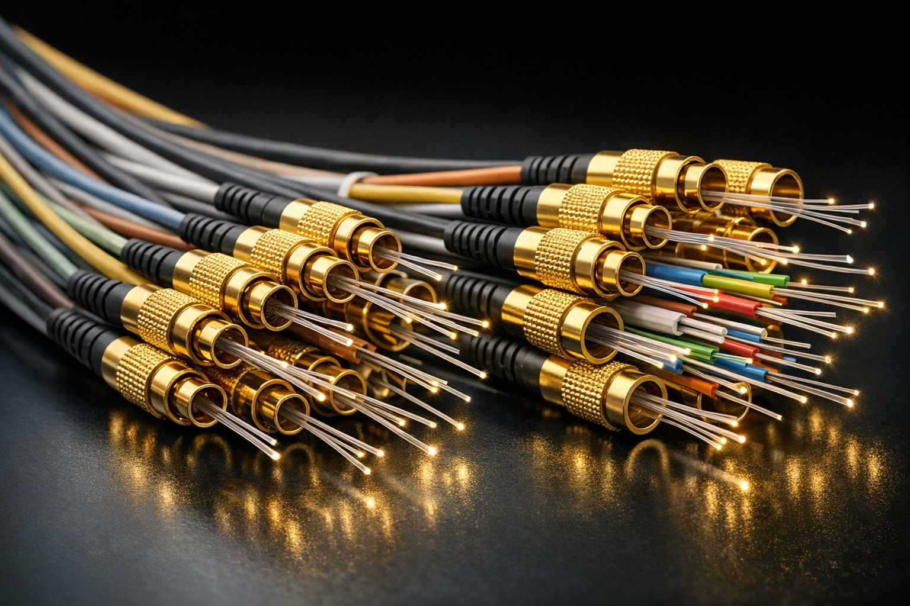

ST 2110-7 Seamless Protection: The Redundancy Math Every IP Broadcaster Gets Wrong
Hitless failover is the headline promise of ST 2110-7. The Red/Blue network math, PTP boundary clock placement, and the control plane gap are where 2026 IP migrations quietly fail.

SMPTE ST 2110-7 defines seamless protection switching for IP media networks — the mechanism that is supposed to make IP broadcast as reliable as SDI. In practice, most 2026 implementations are getting the redundancy math wrong in predictable ways that only surface under failure conditions.
What ST 2110-7 actually promises
The standard specifies dual Red/Blue network paths carrying identical media streams. A receiver monitors both paths continuously and switches transparently when one fails — with no lost frames, no visible glitch, no operator intervention. This is the hitless failover that makes IP infrastructure viable for live broadcast.
The promise is real. The implementation gap is where most engineering teams discover that their design assumed ideal conditions that do not exist in production networks.
The Red/Blue network math
A properly protected ST 2110-7 system requires that the Red and Blue paths are truly independent — separate physical switches, separate cable routes, separate power domains. In practice, most facility designs share at least one common element: a shared PTP grandmaster, a shared fibre entry point, or a shared network management plane. Any shared element creates a single point of failure that the redundancy is designed to prevent.
The timing math compounds this. The receiver buffer must absorb the maximum path differential between Red and Blue — typically specified as the network delay budget. If the actual differential exceeds the buffer size, the switch is no longer seamless. Most off-the-shelf 2110-7 implementations use conservative buffer sizes that work in lab conditions but fail when congested switches introduce variable delay in production.
PTP boundary clock placement
PTP grandmaster redundancy is the most commonly misunderstood element of a 2110 design. Two grandmasters on independent power and clock sources are necessary but not sufficient. The boundary clocks that distribute PTP through the network must also be on independent paths — and the PTP domain must be configured to avoid the convergence delay that occurs when a grandmaster fails and the network elects a new one.
In a correctly configured system, PTP convergence completes before the media receiver's buffer is exhausted. In an incorrectly configured system, the receiver loses timing reference before the switch completes, and the hitless failover becomes a visible freeze.
The control plane gap
ST 2110-7 protects the media plane. It does not protect the control plane. SDP session descriptions, NMOS IS-04 registration, and IS-05 connection management all run on the same network infrastructure as the media — but they are not duplicated by the protection switching mechanism.
When a switch or network segment fails, the media may switch seamlessly while the control plane loses connectivity. The result is a receiver that is playing out correctly but cannot be remotely controlled, monitored, or reconfigured. For automated broadcast operations, this is operationally equivalent to a failure even if viewers see no interruption.
What to verify before go-live
Any ST 2110-7 deployment should be tested under real failure conditions before going live — not just with cable pulls on known paths, but with switch failures, power outages on individual network segments, and PTP grandmaster failures. The test should confirm that failover completes within the specified window, that the control plane recovers within an acceptable time, and that the monitoring systems correctly identify and log the failure event.
Documentation of the tested failure scenarios, the measured failover times, and the identified recovery procedures is essential for operational teams who will be managing the system under time pressure during a live event.